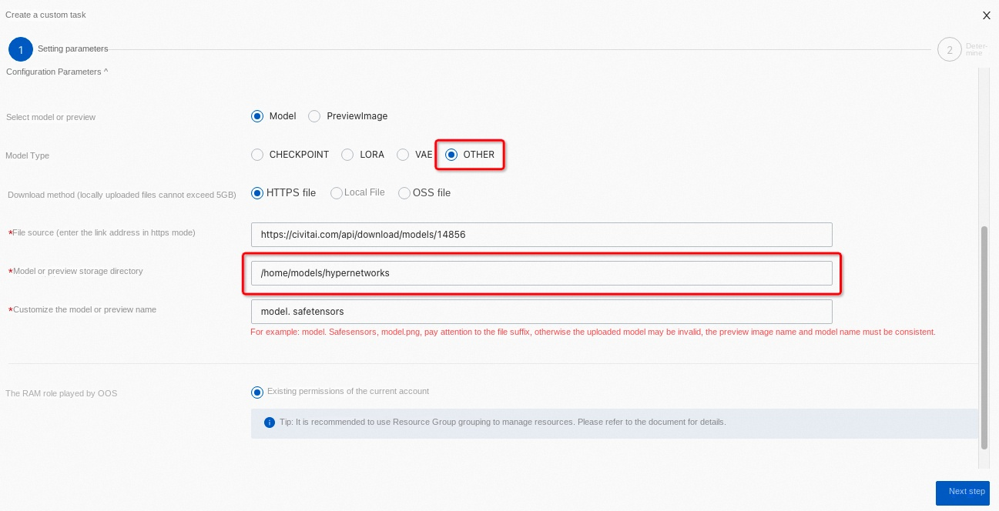
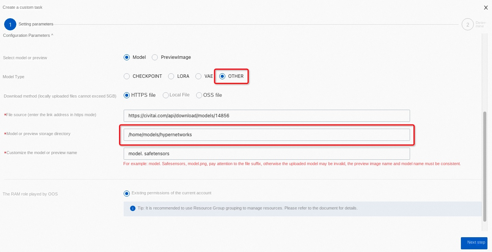

stable-diffusion service instance deployment documentation
Disclaimer: This service is provided by a third party. We try our best to ensure its safety, accuracy and reliability, but we cannot guarantee that it is completely free from failures, interruptions, errors or attacks. Therefore, the company hereby declares that it makes no representations, warranties or commitments regarding the content, accuracy, completeness, reliability, suitability and timeliness of the Service and is not liable for any direct or indirect loss or damage arising from your use of the Service; for third-party websites, applications, products and services that you access through the Service, do not assume any responsibility for its content, accuracy, completeness, reliability, applicability and timeliness, and you shall bear the risks and responsibilities of the consequences of use; for any loss or damage arising from your use of this service, including but not limited to direct loss, indirect loss, loss of profits, loss of goodwill, loss of data or other economic losses, even if we have been advised in advance of the possibility of such loss or damage; we reserve the right to amend this statement from time to time, so please check this statement regularly before using the Service. If you have any questions or concerns about this Statement or the Service, please contact us.
Overview
The Stable Diffusion Web UI is a basic application based on the Stable Diffusion. It uses the gradient module to build an interactive program that can immediately access the Stable Diffusion in a low-code GUI. It supports text to generate pictures, pictures to pictures, uses a variety of models to achieve the effect you want, and can train your own exclusive model. this topic describes how to activate the stable-diffusion service on the computing nest, as well as the deployment process and usage instructions.
Billing Description
The cost of stable-diffusion on computing nests is mainly related:
-Selected vCPU and memory specifications -Disk Capacity -public network bandwidth
Billing methods include:
-Pay-As-You-Go (hours) -Package year and package month
The estimated cost can be seen in real time when the instance is created.
Deployment Architecture
stable-diffusion service single-machine deployment architecture.
Permissions required for RAM accounts
The stable-diffusion service needs to access and create resources such as ECS and VPC. If you use a RAM user to create a service instance, you need to add the corresponding resource permissions to the account of the RAM user before creating the service instance. For details about how to add RAM permissions, see Authorize RAM users. The required permissions are shown in the following table.
| Permission policy name | Comment |
|---|---|
| AliyunECSFullAccess | Permissions for managing ECS instances |
| AliyunVPCFullAccess | Permissions to manage a VPC |
| AliyunROSFullAccess | Manage permissions for Resource Orchestration Service (ROS) |
| AliyunComputeNestUserFullAccess | Manage user-side permissions for the compute nest service (ComputeNest) |
| AliyunCloudMonitorFullAccess | Permissions to manage CloudMonitor (CloudMonitor) |
Deployment process
Deployment steps
Click Deployment Link to enter the service instance deployment page, and fill in the parameters according to the interface prompts to complete the deployment.
Deployment parameter description
When you create a service instance, you need to configure the service instance information. The following describes the details of the stable-diffusion service instance input parameter.
| Parameter group | Parameter item | Example | Description |
|---|---|---|---|
| Service instance name | test | Instance name | |
| Region | China (Hangzhou) | Select the region of the service instance. We recommend that you select the region nearby to obtain better network latency. | |
| Availability Zone Configuration | Deployment Region | Zone I | Different Availability Zones in a Region |
| Payment Type Configuration | Payment Type | Pay-As-You-Go or Subscription | |
| ECS instance configuration | Instance type | ecs.gn6i-c4g1.xlarge | Instance type, which can be selected according to actual needs |
| ECS instance configuration | Instance password | ** | Set the instance password. It must be 8 to 30 characters in length and must contain three items (uppercase letters, lowercase letters, numbers, ()'~!@#$%^& *-+ ={}[]:;' <>,.?/special symbols) |
| Network configuration | VPC IPv4 CIDR block | 192.168.0.0/16 | IP address range of VPC |
| Network configuration | Switch subnet segment | 192.168.0.0/24 | Switch subnet segment |

Validation Results
- View the service instance.
After the service instance is created successfully, the deployment time takes about 2 minutes. After the deployment is complete, the corresponding service instance is displayed on the page.

-
Access stable-diffusion through a security proxy.
-
After completing the verification, you can access:
Set Chinese menu
- Select "setting" and select the User Interface on the left

- Select the User Interface again and click.

- The three operations shown in the installation diagram are set to Chinese
Download model
If your machine is deployed in China, please use websites such as Model Scope,liblib to download the model and avoid being blocked by the wall.
OOS Download
-
Take the model provided by a model website as an example. First, this model website finds the model you want to download (the type of model is displayed in the upper left corner of the preview)

-
Click a model preview to enter the details page, find the Download button, right-click, and copy the link address:

-
Click Operation and Maintenance Management in the Computing Nest console, click Download Model, and enter the relevant parameters (select the model or preview, model type, download method, file type, and enter the model name):

- Click Operation and Maintenance Management in the Computing Nest console, click Download Model, and enter the relevant parameters (select the model or preview, model type, download method, file type, and enter the model name):
-CHECKPOINT model example:
-Lora model example:
 -Note: You do not need to enter a storage directory for the CHECKPOINT, LORA, and VAE modes. For other models, you can select OTHER in the model type and modify the file storage directory by yourself:

-Note: You do not need to enter a storage directory for the CHECKPOINT, LORA, and VAE modes. For other models, you can select OTHER in the model type and modify the file storage directory by yourself:
 - After the parameter input is completed, click Next and click Create to start downloading

- Wait for the download to complete (you can also continue to download other models during the waiting process). When the execution status changes to success, it means that the download has been completed.
- At this time, you can log in to the WebUI to load the downloaded model.
-CHECKPOINT the model example, click the refresh button above, you can see the CHECKPOINT model we just downloaded
 -Lora model example, click the Lora button on the right, and then click Refresh to see the Lora model we just downloaded.
-Lora model example, click the Lora button on the right, and then click Refresh to see the Lora model we just downloaded.
- We can see here that if there is no preview of the model downloaded directly, we can upload a picture to the model file by ourselves through the above download method. Here, we upload the Lora model preview of the local file as an example.
- Click OK, Create, and wait for the execution status to become successful. Click on the Refresh again and you can see that the preview has been loaded!
Download the plug-in
Important: If your machine is not an overseas machine, please use the download link of Github mirror website to avoid plug-in installation failure caused by the wall.
1. Download the plug-in from the menu shown in the figure.
2. 
Cost savings
ECS Cost Savings
GPU resources are expensive and can be used to save costs in the following two ways: 1. If you do not use it for the time being, you can select shutdown (save shutdown mode) on the operation and maintenance management page [ensure that the pay-as-you-go type is selected in the previous quick start step 1]. At this time, some resources will be recovered and charging will be stopped to reduce related costs and save usage costs. The next time you use it, start it again. The operation is as follows:
-Shutdown:

-Wait for shutdown to end:
-Power on:
-Wait for end of boot:
2. If the service instance is no longer used completely, the service instance can be deleted directly, and no further expenses will be incurred in the future.

API Access
Stable Diffusion created through the computing nest enable API access by default. You can use API calls to better integrate our services.
You can view the list of all accessible APIs, such as access http://48.xxx.xx, from the Endpoint /docs# obtained in Step 4. 163:8080/docs# can be seen

The following is an example of calling the Stable Diffusion API from Python: ''' import requests import io import base64 from PIL import Image, PngImagePlugin
if name == 'main ': url = "http://48.xxx.xx. 163:8080" payload = { "prompt": "puppy dog ", "steps": 5 } token = "admin:password" encoded_token = base64.b64encode(token.encode("utf-8")).decode("utf-8") headers = { "Content-Type": "application/json ", "Authorization": f'Basic {encoded_token}' } response = requests.post(url=f'{url}/sdapi/v1/txt2img', json=payload, headers=headers) r = response.json() for I in r['images']: image = Image.open(io.BytesIO(base64.b64decode( I .split(",", 1)[0]))) png_payload = { "image": "data:image/png;base64," I } response2 = requests.post(url=f'{url}/sdapi/v1/png-info', json=png_payload) pnginfo = PngImagePlugin.PngInfo() pnginfo.add_text("parameters", response2.json().get("info")) image.save('output.png', pnginfo=pnginfo)
''' For more information about API access, see the API Access Wizard
Help documentation
Please visit stable-diffusion Usage Documentation to learn how to use.